Networking
Tutorials and Guides
Configure Router Mikrotik Replacing Router HGU Movistar/O2
This guide documents how I configured a MikroTik hEX S as the main router behind a Movistar/O2 HGU. The HGU remains the optical endpoint in Monopuesto mode, while the MikroTik terminates PPPoE and provides routing, firewall, DHCP, DNS, and VPN services.
Home Network Map
Open the interactive home network diagram.
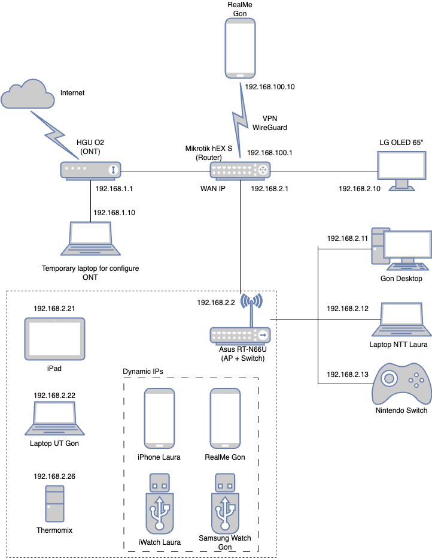
The image above is the original static map. The interactive diagram is a reviewed, source-backed version with guided views for Internet access, LAN services, and WireGuard remote access.
Hard Reset
This is optional. I reset the router because it had been configured years earlier and I no longer knew its management subnet or credentials:
- With the router unplugged, press and hold the Reset button, then reconnect the power.
- Release the button when the green SFP LED starts flashing to reset RouterOS to its defaults. More info
- After the router reboots, connect to
192.168.88.1with useradminand no password. Temporarily configure the client with an address in192.168.88.0/24, then set a strong router password before continuing.
Change default IP address
MikroTik routers can be managed through WinBox, WebFig, or the RouterOS CLI. This guide uses WinBox screenshots and includes equivalent CLI commands.
WinBox
- Go to IP > Addresses
- Select interface with name
bridge - Modify Address and Network. In this case:
- Address:
192.168.2.1/24 - Network:
192.168.2.0 - Click on Apply and OK
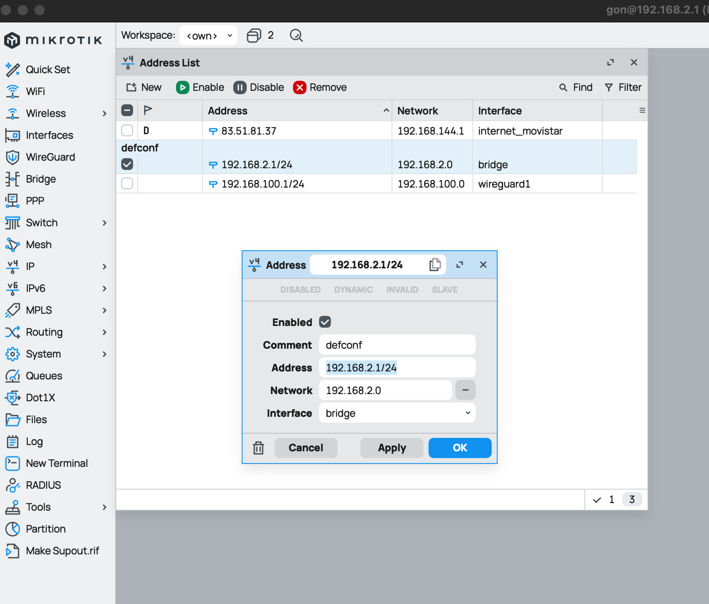
- Go to System > Reboot
CLI
Set the router's LAN address on the bridge interface. In this configuration, the existing address entry has ID 0.
ip/address/print where interface=bridge
Columns: ADDRESS, NETWORK, INTERFACE
# ADDRESS NETWORK INTERFACE
;;; defconf
0 192.168.88.1/24 192.168.88.0 bridge
ip/address/set numbers=0 address=192.168.2.1/24
ip/address/print where interface=bridge
Columns: ADDRESS, NETWORK, INTERFACE
# ADDRESS NETWORK INTERFACE
;;; defconf
0 192.168.2.1/24 192.168.2.0 bridge
Change the HGU to Monopuesto mode
Change the HGU from its default routing mode to Monopuesto so the downstream MikroTik can establish the PPPoE session. The HGU still provides the optical termination and its management interface; it is not an unmanaged ONT.
- Open the HGU web panel at http://192.168.1.1/.
- Disable its DHCP service and Wi-Fi.
- Change the mode from Multipuesto to Monopuesto.
- Connect the HGU's
eth1port to the MikroTik'sether1port.
Configure VLAN for a tagged handoff
Movistar/O2 uses VLANs for Internet, VoIP, and TV services; Internet traffic uses VLAN ID 6. Only create this interface when the handoff to the MikroTik is tagged, such as with a direct ONT. In the captured configuration, internet_movistar is running directly on ether1, so vlan_internet_movistar exists but is not part of the active PPPoE path.
RouterOS recommends keeping the VLAN Layer 3 MTU at 1500. PPPoE negotiates its own lower effective MTU; the screenshot below shows an older VLAN MTU value of 1492.
WinBox
- Go to Interfaces and select the VLAN tab.
- Click New.
- Set these parameters:
- Name:
vlan_internet_movistar - MTU:
1500 - VLAN ID:
6 - Interface:
ether1 - Click Apply and OK.
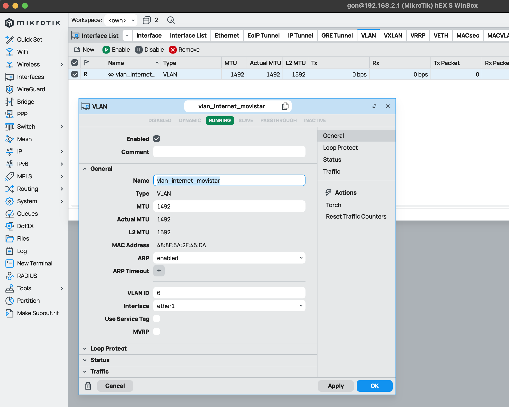
CLI
interface/vlan/add name=vlan_internet_movistar vlan-id=6 interface=ether1
interface/vlan/print
Flags: R - RUNNING
Columns: NAME, MTU, ARP, VLAN-ID, INTERFACE
# NAME MTU ARP VLAN-ID INTERFACE
0 R vlan_internet_movistar 1500 enabled 6 ether1
Configure PPPoE Client (WAN)
PPPoE (Point-to-Point Protocol over Ethernet) establishes the authenticated session with Movistar/O2 and assigns the MikroTik a public IP address.
The captured HGU Monopuesto setup exposes untagged PPPoE, so it uses ether1. For a tagged handoff, bind the PPPoE client to vlan_internet_movistar instead.
WinBox
- Go to PPP
- Click on New > PPPoE Client
- On tab/section General:
- Name:
internet_movistar - Interface:
ether1 - On tab/section Dial Out:
- User:
adslppp@telefonicanetpa - Password:
adslppp - Enable option
Add Default Route - Click on Apply and OK
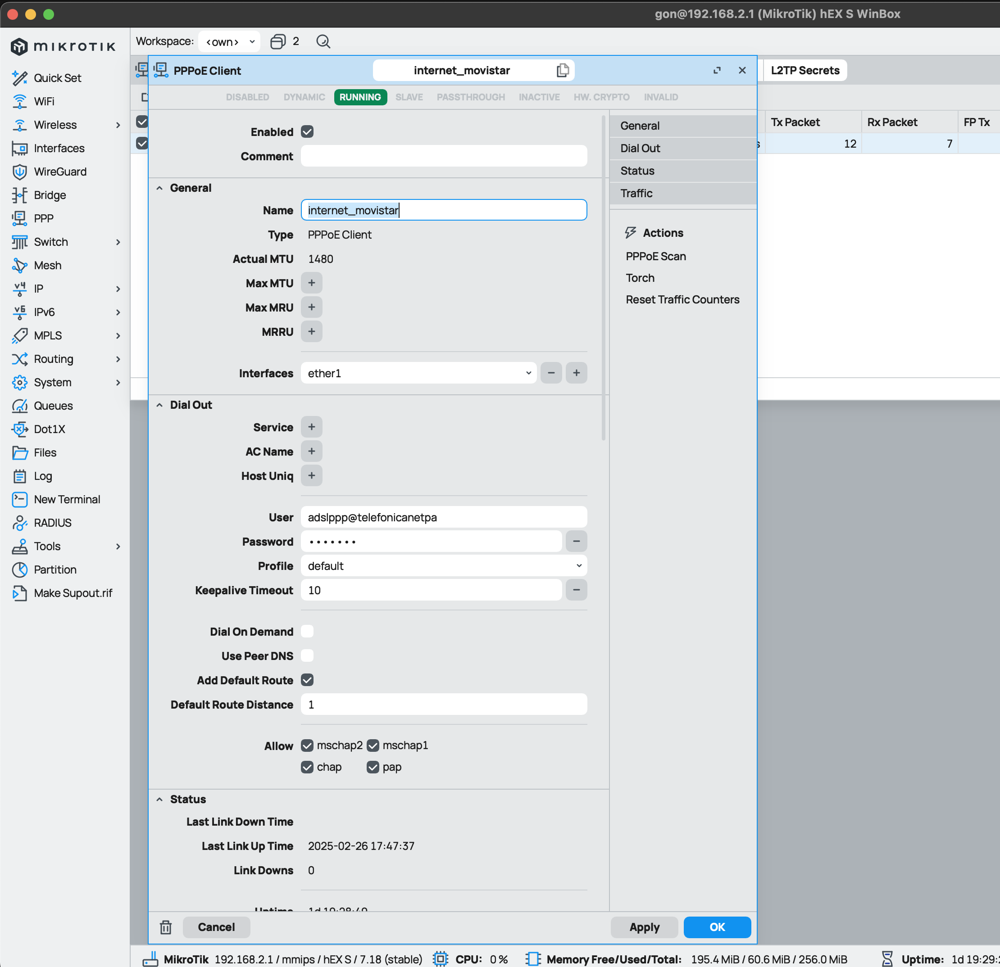
CLI
interface/pppoe-client/add name=internet_movistar interface=ether1 user=adslppp@telefonicanetpa password=adslppp add-default-route=yes disabled=no
interface/pppoe-client/print
Flags: X - disabled, I - invalid; R - running
0 R name="internet_movistar" max-mtu=auto max-mru=auto mrru=disabled interface=ether1 user="adslppp@telefonicanetpa"
password="adslppp" profile=default keepalive-timeout=10 service-name="" ac-name="" add-default-route=yes
default-route-distance=1 dial-on-demand=no use-peer-dns=no allow=pap,chap,mschap1,mschap2
Configure DHCP Server on LAN
Configure the address range that the MikroTik DHCP server leases to LAN clients. The default DHCP server runs on the bridge interface.
The original map labels 192.168.2.10 through 192.168.2.26 as fixed client addresses, while the captured pool starts at 192.168.2.10. The steps below use a non-overlapping dynamic range. Alternatively, keep the original range and convert every labelled client address to a static DHCP lease.
WinBox
- Go to IP > DHCP Server
- Select tab Networks and select network with name
defconf: - Address:
192.168.2.0/24 - Gateway:
192.168.2.1 - DNS servers:
192.168.2.1 - Click on Apply and OK
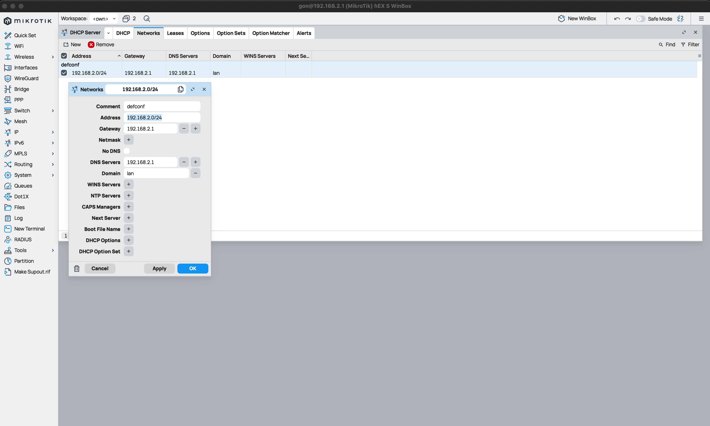
- Go to IP > Pool
- Select IP pool named
dhcp-default: - Address:
192.168.2.100-192.168.2.254 - Click on Apply and OK
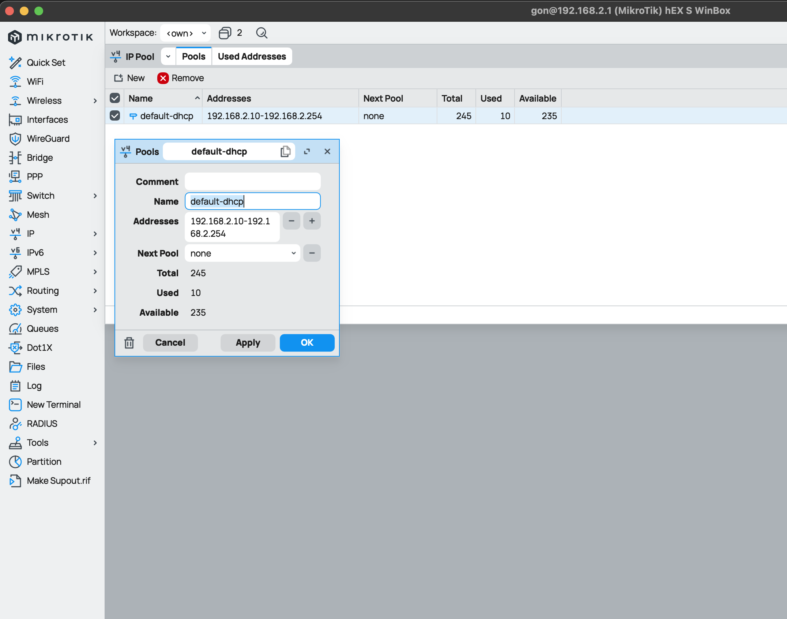
The screenshot records the previous 192.168.2.10-192.168.2.254 pool.
CLI
ip/dhcp-server/network/set numbers=0 address=192.168.2.0/24 gateway=192.168.2.1 dns-server=192.168.2.1
ip/dhcp-server/network/print
Columns: ADDRESS, GATEWAY, DNS-SERVER
# ADDRESS GATEWAY DNS-SERVER
;;; defconf
0 192.168.2.0/24 192.168.2.1 192.168.2.1
ip/pool/set numbers=0 ranges=192.168.2.100-192.168.2.254
ip/pool/print
Columns: NAME, RANGES, TOTAL, USED, AVAILABLE
# NAME RANGES TOTAL USED AVAILABLE
0 default-dhcp 192.168.2.100-192.168.2.254 155 0 155
Configure NAT on Firewall
Check that a source NAT masquerade rule exists for traffic leaving through the WAN interface list.
WinBox
- Go to IP > Firewall
- Select tab NAT
- Check if a rule exists with next config:
- On General
- Chain:
srcnat - Out. Interface List:
WAN
- Chain:
- On Action
- Action:
masquerade
- Action:
- Checkbox Enabled marked
If it does not exist, create it with this configuration.
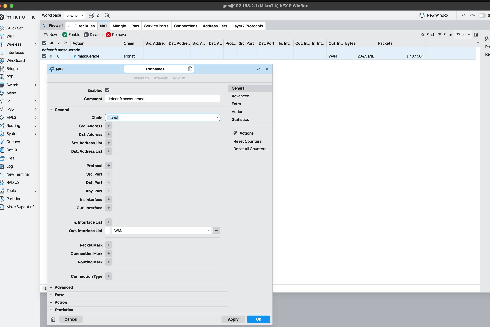
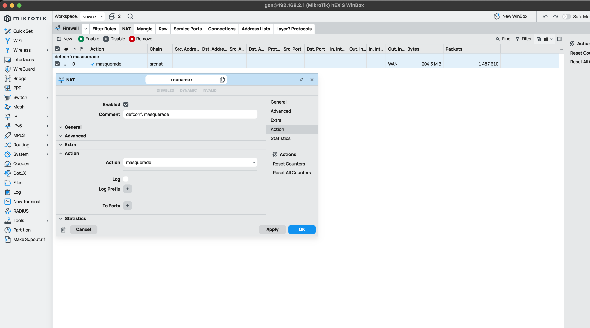
CLI
ip/firewall/nat/add chain=srcnat action=masquerade out-interface-list=WAN comment="defconf:masquerade"
ip/firewall/nat/print
Flags: X - disabled, I - invalid; D - dynamic
0 ;;; defconf: masquerade
chain=srcnat action=masquerade out-interface-list=WAN ipsec-policy=out,none
Configure DNS Server
Configure the MikroTik as a caching DNS server for known LAN clients.
WinBox
Configure DNS server
- Go to IP > DNS
- On Servers add next DNS servers:
1.1.1.11.0.0.18.8.8.88.8.4.4
- Check option Allow Remote Requests
- Cache Max TTL:
06:00:00(Optional)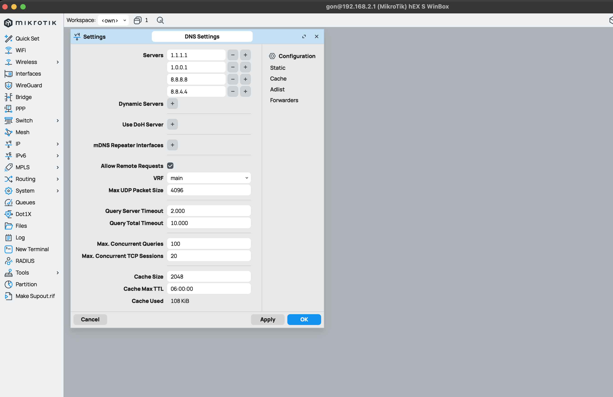
Add firewall rules for DNS requests. Restrict both rules to the LAN; allow-remote-requests=yes without a source restriction can expose the router as an open resolver.
- Go to IP > Firewall.
- Check or add rules allowing DNS traffic over TCP and UDP:
- Click New:
- Chain:
input - In. Interface List:
LAN - Protocol:
tcp - Dst. Port:
53 - Action:
accept
- Chain:
- Click Apply and OK.
- Create an equivalent rule with Protocol set to
udp. - Place both rules after the ICMP allow rule and before the rule that drops input not coming from the LAN.
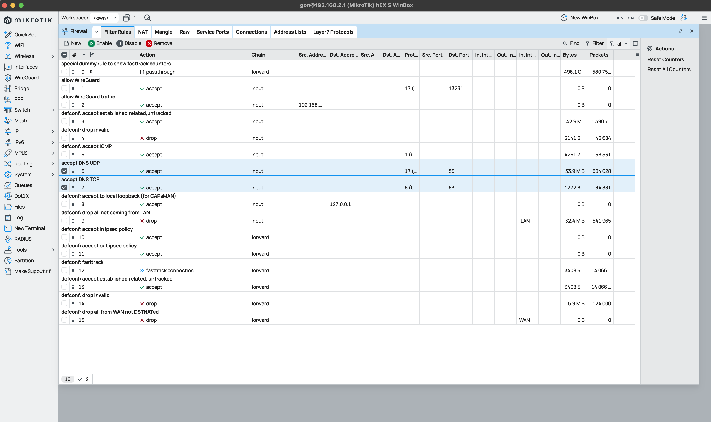
The screenshot shows the earlier rules without an input-interface restriction. Do not reproduce that part of the captured configuration. If WireGuard clients should also use this resolver, add equivalent rules limited to src-address=192.168.100.0/24.
Configure DNS by DHCP clients
- Go to IP > DHCP Server
- Go to tab Networks
- Select network
defconf - DNS Servers:
192.168.2.1(Mikrotik local IP) - Domain:
lan - Click on Apply and OK
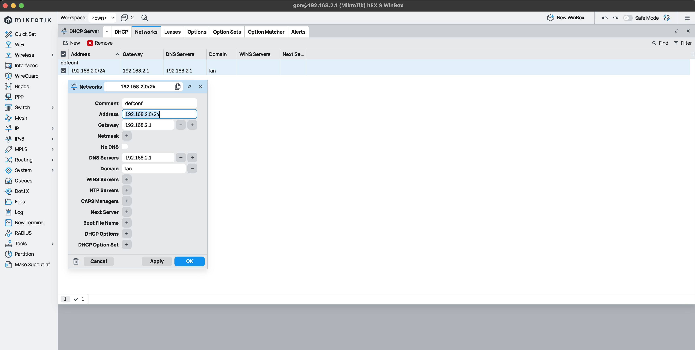
CLI
ip/firewall/filter/add chain=input action=accept in-interface-list=LAN protocol=udp dst-port=53 comment="allow LAN DNS over UDP" place-before=[find where comment="defconf: drop all not coming from LAN"]
ip/firewall/filter/add chain=input action=accept in-interface-list=LAN protocol=tcp dst-port=53 comment="allow LAN DNS over TCP" place-before=[find where comment="defconf: drop all not coming from LAN"]
ip/dns/set servers="1.1.1.1,1.0.0.1,8.8.8.8,8.8.4.4" allow-remote-requests=yes cache-max-ttl=6h
ip/dns/print
servers: 1.1.1.1
1.0.0.1
8.8.8.8
8.8.4.4
dynamic-servers:
use-doh-server:
verify-doh-cert: no
doh-max-server-connections: 5
doh-max-concurrent-queries: 50
doh-timeout: 5s
allow-remote-requests: yes
max-udp-packet-size: 4096
query-server-timeout: 2s
query-total-timeout: 10s
max-concurrent-queries: 100
max-concurrent-tcp-sessions: 20
cache-size: 2048KiB
cache-max-ttl: 6h
address-list-extra-time: 0s
vrf: main
mdns-repeat-ifaces:
cache-used: 120KiB
Configure WireGuard VPN
MikroTik supports WireGuard from RouterOS 7.1 onward. Upgrade RouterOS first if the installed version is older.
This example connects a phone to the MikroTik, but the same approach works with any WireGuard-compatible client.
This video was a useful reference: Configurar VPN Wireguard - Mikrotik en tu telefono
WinBox
Create the WireGuard interface:
- Go to WireGuard > New
- On tab General:
- Name:
wireguard1 - Listen Port:
13231 - MTU:
1420 - Click Apply. RouterOS generates the private and public keys.
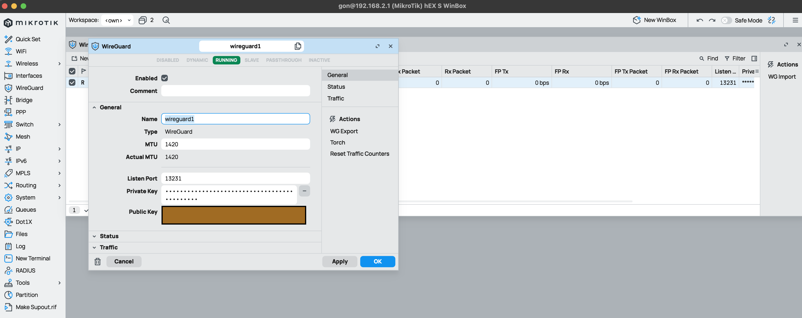
Assign an IP address to the new interface:
- Go to IP > Addresses > New
- Configure these parameters:
- Enabled: marked
- Address:
192.168.100.1/24 - Network:
192.168.100.0 - Interface:
wireguard1
Create a peer on the server. This example uses a mobile phone whose WireGuard address is 192.168.100.10/32.
- Go to WireGuard
- On tab Peers > New
- Enabled: marked
- Name:
realme_gon - Interface:
wireguard1 - Public Key:
<public key generated by the WireGuard client> - Allowed Address:
192.168.100.10/32
The server also needs a WAN input rule for UDP port 13231 and a forward rule from the WireGuard subnet to the home LAN. Place both before the relevant drop rules:
ip/firewall/filter/add chain=input action=accept in-interface-list=WAN protocol=udp dst-port=13231 comment="allow WireGuard" place-before=[find where comment="defconf: drop all not coming from LAN"]
ip/firewall/filter/add chain=forward action=accept src-address=192.168.100.0/24 dst-address=192.168.2.0/24 comment="allow WireGuard to LAN" place-before=[find where comment="defconf: fasttrack"]
On the phone, configure its tunnel address as 192.168.100.10/32, use the MikroTik's WireGuard public key, set the endpoint to the router's public IP or DNS name on UDP port 13231, and include 192.168.2.0/24 in AllowedIPs. Use 192.168.2.1 as DNS only after adding the VPN-specific DNS firewall rules described above.